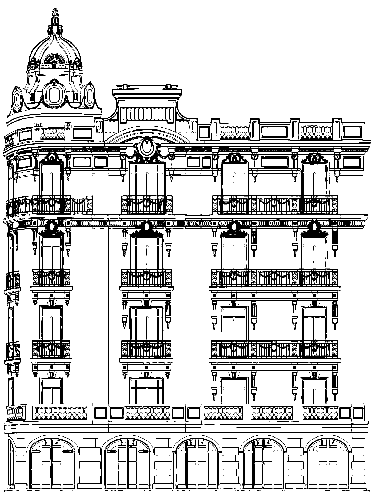
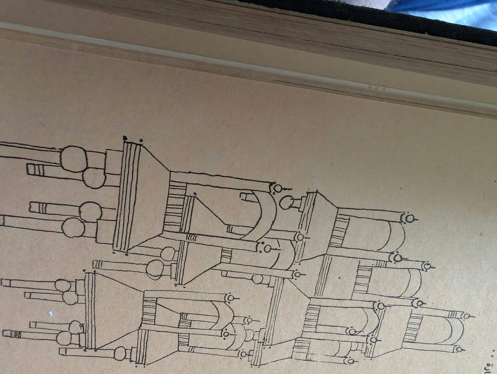

A system that
does real work.
Six connected interfaces for collecting, describing, reading and distributing Egyptian cultural material. The layouts change density with the task, while the GMD visual grammar stays intact.

Invite, discover,
understand.
Mission-led pages with image, illustration and source context. Each page has its own compositional rhythm.
What GMD
makes possible.
Collect → describe → connect → distribute, with clear routes to products and services.
Open marketing page ↗ 02 / COLLECTION
02 / COLLECTIONFind the
whole object.
A browsable Egyptian collection with visible evidence, image and provenance.
Open collection page ↗ 03 / EDITORIAL
03 / EDITORIALMake room
for a story.
An article-scale composition with a complete source object and context close at hand.
Open editorial page ↗Organize the
unanswered.
Dense interfaces for describing collections, reviewing contributions and reading local examples. Controls work on specimen data; no backend is implied.
Dataset browser
Search, segment, inspect and compare records.
 Open ↗05
Open ↗05Collection intake
Capture source, description and permissions in a guided local form.
 Open ↗06
Open ↗06Insights workspace
Review structured examples without fictional business metrics.

Open ↗One grammar.
Two densities.
Paper, ink, Nile and pink; Source Sans 3, Source Serif 4, Mada, Amiri and Handjet; a Perfectly Nineties wordmark, ruled navigation and hard 5/3/0 depth. Pages use source material with a reachable complete view.